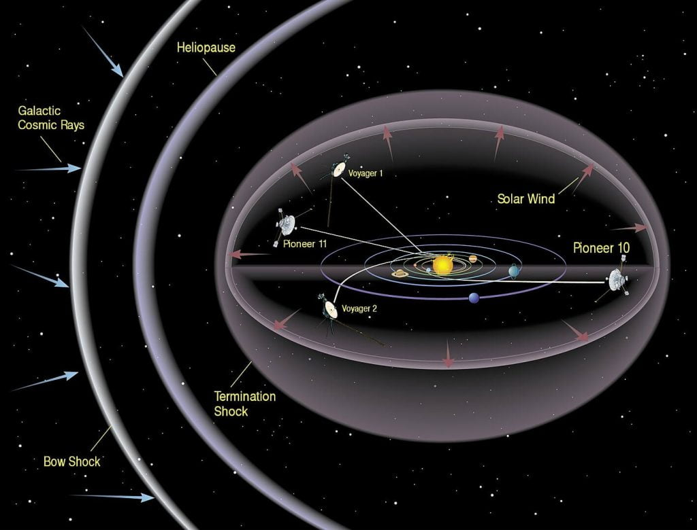
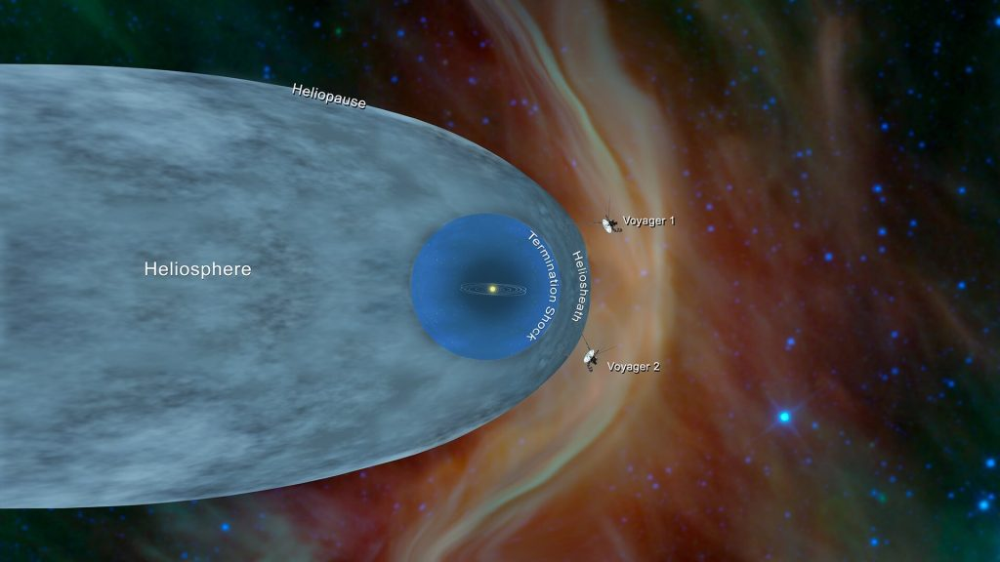

ဒီ နေအဖွဲ့အစည်းရဲ့ နယ်နိမိတ် အနားသတ် ကို Heliosphere (ဟီလီယို စဖီးယား) လို့ ခေါ်ပါတယ်။ ဒီ နယ်နိမိတ်ဟာ ကျွန်တော်တို့ နေအဖွဲ့အစည်းနဲ့ ပြင်ပ အာကာသ (Deep Space) နဲ့ကို ပိုင်းခြားပေးထားတဲ့ နယ်ခြားပဲ ဖြစ်ပါတယ်။ ဒါကို ပူပေါင်းကြီး တစ်ခုအနေနဲ့ မြင်ကြည့်လို့ ရပါတယ်။ ဒီ ပူပေါင်း ရဲ့ အတိုင်းအတာကို ပထမဆုံး အကြိမ်အဖြစ် သိပ္ပံ ပညာရှင်တွေက တွက်ချက်ပြီး မြေပုံ ရေးဆွဲ နိုင်ခဲ့ပြီ ဖြစ်ပါတယ်။
ဒီ နယ်ခြားမျဉ်းကို တိတိကျကျ သတ်မှတ်နိုင်တဲ့ အတွက် သိပ္ပံ ပညာရှင်တွေ အနေနဲ့ နေက တိုက်ခတ်လာတဲ့ ဆိုလာလေ (Solar Wind) နဲ့ အခြား ကြယ်တွေကနေ တိုက်ခတ်လာတဲ့ ကြယ်လေ (Interstellar wind) နှစ်ခု ဘယ်လို ထိတွေ့မှု ဖြစ်သလဲ ဆိုတာကို လေ့လာဖို့ အထောက်အကူ ပြုမှာ ဖြစ်ပါတယ်။
“ရူပဗေဒ ပညာရှင်တွေက ဒီနယ်စပ်မျဉ်းကို ခန့်မှန်း ပြောကြားခဲ့ ကြတာ ကြာပါပြီ။ ဒါပေမယ့် ဒါဟာ ပထမဆုံး အကြိမ် အနေနဲ့ ဒီမျဉ်းကို တိုင်းတာနိုင်တာ ဖြစ်ပြီး ပထမဆုံး 3D မြေပုံပေါ် တင်နိုင်ခဲ့တာလဲ ဖြစ်ပါတယ်” လို့ ဒီတိုင်းတာမှုကို ဦးဆောင်တဲ့ Los Alamos National Laboratory က Dan Reisenfeld က ပြောပါတယ်။
ဒီနယ်ခြားမျဉ်း (Heliosphere) ကဘယ်မှာရှိတာလဲနေရဲ့ နယ်ခြား အနားသတ်ဟာ နေကနေ ပလူတို အထိ အကွာအဝေးရဲ့ ၂ ဆ ရှိပါတယ်။ ဒီ heliosphere ဆိုတာက နေကနေ တိုက်ခတ်လာနေတဲ့ Solar Wind ကြောင့် ဖြစ်လာတဲ့ အရံအတား တစ်ခုလဲ ဖြစ်ပါတယ်။
Solar Wind ဆိုတာဘာလဲ
နေကနေပြီး ပရိုတွန်တွေ၊ အီလက်ထရွန်တွေ နဲ့အခြား အမှုန်အမွှားတွေ တချိန်လုံး လွင့်ထွက်လို့ လာနေပါတယ်။ ဒီအမှုံအမွှားတွေဟာ နေနဲ့ အခြား ကြယ်တွေ အကြားက အာကာသ ဟင်းလင်းပြင် စပ်ကြားနယ်မြေ (Interstellar space) ထိအောင် ရောက်ပါတယ်။ ဒီအမှုံအမွှားတွေ အဝေးဆုံး ရောက်တဲ့ နေရာဟာ နေရဲ့ နယ်စပ်မျဉ်းပဲ ဖြစ်ပါတယ်။ တနည်းအားဖြင့် နေရဲ့ boundry ပေါ့ဗျာ။ဒီ solar wind ဆိုလာလေ တွေဟာ ကမ္ဘာပေါ်ကို ကျရောက်လာမယ်ဆိုရင် ဆိုးကျိုးတွေ ဖြစ်စေနိုင်ပါတယ်။ အထူးသဖြင့် ဂြိုလ်တု ဆက်သွယ်ရေး စနစ်တွေ၊ လျှပ်စစ်ဓါတ်အား လိုင်းတွေ၊ ရေဒီယိုနဲ့ ဖုန်း ဆက်သွယ်ရေး ကွန်ယက်တွေ နဲ့ လေကြောင်း သွားလာမှုတွေကို ထိခိုက်စေနိုင်ပါတယ်။ ဒါပေမယ့် တဖက်ကလဲ သူ့ထက် ပိုပြီး ဆိုးကျိုးပေးနိုင်တဲ့ ကြယ်တွေကလာတဲ့ ရေဒီယို သတ္တိကြွလှိုင်း (Interstellar radiation) တွေရန်ကနေ တားဆီး ပေးနေ ပြန်ပါတယ်။
ဒီ Heliosphere ကကမ္ဘာကို ဘယ်လိုကာကွယ်ပေးထားသလဲ

ဒီ Heliosphere ကဘယ်လောက်ကြီးသလဲ
ဒီ Heliosphere ကြီးက အလွန်ပဲ ကြီးပါတယ်။ သူ့ရဲ့ နယ်နိမိတ်ကလဲ အရမ်း ဝေးပါတယ်။ ဒါပေမယ့် အလင်းနှစ်နဲ့ ရေတွက်ရလောက်အောင်တော့ ဝေးတာ မဟုတ်ပါဘူး။ ကျွန်တော်တို့ နေအဖွဲ့အစည်း အတွင်းက အကွားအဝေးကို Astronomical Unit (AU) လို့ ခေါ်တဲ့ နက္ခတ္တဗေဒ အတိုင်းအတာ ယူနစ်နဲ့ တိုင်းတာလေ့ ရှိပါတယ်။ 1 AU = နေနဲ့ ကမ္ဘာကြား အကြာအဝေး နဲ့ ညီမျှပါတယ်။ ဆိုလိုတာ 5 AU ဆိုရင် နေနဲ့ ကမ္ဘာ အကွာအဝေးရဲ့ ၅ ဆ လို့ ပြောတာ ဖြစ်ပါတယ်။ပြဿနာက ဒီ Heliosphere ကြီးက စက်ဝိုင်းပုံ ဝန်းဝန်းဝိုင်းဝိုင်း မဟုတ်ပဲ လခြမ်းပုံ ကွေးကွေးလေး ဖြစ်နေပါတယ်တဲ့။ ဒီပုံမှာ ခေါင်းပိုင်း (Nose) နဲ့ အမြှီးပိုင်း (Tail) ဆိုပြီး ရှိပါတယ်။ ခေါင်းပိုင်းက ကြီးပြီး အမြှီးက သေးသွားတာပါ။ ဒီလို ဖြစ်ရတာက နေအဖွဲ့အစည်းက အာကာသထဲ ရွှေ့လျား သွားတဲ့ အခါမှာ အခြားကြယ်တွေဆီက တိုက်ခတ်လာတဲ့ Interstellar Wind ကို ဆန့်ကျင်ပြီး ခရီးသွားရတာမို့ ဖြစ်ပါတယ်။ (မျက်စေ့ထဲ လေပြင်းတိုက်နေတဲ့ အချိန် ထီးကို လေဖက်လှည့် ကာပြီး လမ်းလျှောက်နေတာ မြင်ယောက်ကြည့် လိုက်ပါ။ အဲ့သည် ထီးက Heliosphere ပါပဲ။ ဒါဆို ဘာလို့ လခြမ်းပုံလို့ ပြောတာလဲ မြင်ယောင်မှာပါ)။
အခု ရေးဆွဲထားတဲ့ မြေပုံမှာ နေကနေ ခေါင်းပိုင်းကို ၁၂၀ AU လောက် အကွားအဝေး ရှိတယ်လို့ ခန့်မှန်းပါတယ်။ ဒီ အရပ်ဟာ နေက အာကာသထဲရွှေ့လျားသွားနေတဲ့ အရပ်မျက်နှာ ဖြစ်ပါတယ်။
ဆန့်ကျင်ဖက် (အမြှီးပိုင်း) မှာတော့ အကွာအဝေးက နေကနေဆို ၃၅၀ AU လောက် ဝေးပါတယ်။ ဒါပေမယ့် ဒီ့ထက်လဲ ပိုချင် ပိုဝေးမယ်လို့ ဆိုပါတယ်။

ဒီ Heliosphere ကိုဘယ်လိုတိုင်းတာလဲ
အာကာသကြီးက အကြီးကြီးလေ။ အဲ့သည်တော့ ဒီ Heliosphere ကို တိုင်တာလဲ အချိန် အတော်ကြာအောင် ယူခဲ့ရပါတယ်။ နာဆာရဲ့ ကမ္ဘာပတ် လမ်းကြောင်းမှာ လွှတ်တင်ထားတဲ့ Earth-orbiting Interstellar Boundary Explorer (IBEX) သုတေသန ဂြိုလ်တုကနေ ရတဲ့ အချက်အလက်တွေကို တွက်ချက်ပြီး သိရတာ ဖြစ်ပါတယ်။ ဒီဂြိုလ်တုက ဒီ Heliosphere နယ်ခြားဒေသကို ရှာဖွေဖို့ လွှတ်တင်ထားတဲ့ ဂြိုလ်တု ဖြစ်ပါတယ်။ဒီနယ်ခြားဒေသကို ရှာဖွေဖို့ ဆိုနာတွေမှာ သုံးတဲ့ နည်းစနစ်ကို အသုံပြု ထားပါတယ်။ ဆိုနာဆိုတာက ရေအောက်က အတားအဆီးတွေကို သိနိုင်ဖို့ အသံလှိုင်းလွှတ်ပြီး ပြန်လာတဲ့ အသံလှိုင်းကို ပြန်ဖမ်းယူ ပုံဖော်တဲ့နည်းစနစ်ပဲ ဖြစ်ပါတယ်။ လင်းနို့တွေ လေထဲပျံရင်လဲဒီလိုပဲ အသံလှိုင်းလွှတ်ပြီး ပြန်ထွက်လာတဲ့ ပဲ့တင်သံကို ဖမ်းယူပြီး ပုံဖော်တာပါ။
အခုဒီနည်းမှာတော့ အသံလှိုင်းအစား နေကနေ ထွက်လာတဲ့ နေလှိုင်း (Solar Wind) ကို အသုံးပြုတာပဲ ဖြစ်ပါတယ်။ ဒီ နေလှိုင်းက နေကနေ အရပ်အားလုံးကို ပြန့်နှံ့ထွက်နေတာ ဖြစ်ပါတယ်။ ဒီထွက်လာတဲ့ Solar Wind ရဲ့ အင်အားဟာ အမြဲ သတမတ်ထဲ မဟုတ်ပဲ အချိန်နဲ့အမျှ အားက ပြောင်းနေပါတယ်။ ဒီ အား တက်လိုက်ကျလိုက် ဖြစ်နေတာက ဒိုရေမီဖာ သံစဉ်လိုပဲ pattern တစ်ခု အနေနဲ့ ထွက်လာပါတယ်။
ဒီ နေလှိုင်းတွေ နယ်နိမိတ်မျဉ်းကို ရောက်တဲ့အခါမှာ ပြင်ပက လာတဲ့ Interstellar Wind နဲ့ သွားတိုက်မိပါတယ်။ ဒီလိုတိုက်မိတဲ့အခါ energetic neutral atoms (ENAs) ဆိုတဲ့ အမှုန်တွေ အဖြစ် ပြောင်းသွားပါတယ်။ ပြီးတော့ အဲ့သည် အမှုံတွေက မူလ လာရာ လမ်းကြောင်းအတိုင်း ပြန်ကန်ထွက် လာကြပါတယ်။ ဒီ ပြန်ထွက်လာတဲ့ လှိုင်းတွေကလဲ မူရင်း လှိုင်းတွေလို အား အတက်အကျ ရှိပါတယ်။ ဒီ ပြန်ထွက်လာတဲ့ ပဲ့တင်လှိုင်းရဲ့ အား အတက်အကျ သံစဉ် Pattern ကို မူရင်းလှိုင်းရဲ့ pattern နဲ့ ပြန်တိုက်ကြည့်ရင် ဘယ်တုန်းက ထွက်သွားတဲ့ လှိုင်းလဲ ဆိုတာကို ပြန်တွက်လို့ ရပါတယ်။ ဒီကနေမှ လှိုင်းရဲ့ရွှေ့လျားနှုန်းနဲ့ တွက်ရင် အကွာအဝေး ဘယ်လောက် ဆိုတာ သိနိုင်မှာ ဖြစ်ပါတယ်။

ဘာ့ကြောင့် Heliosphere ကိုလေ့လာဖို့လိုတာလဲ
ဒီ နေရဲ့ နယ်စည်းဟာ နေအဖွဲ့အစည်းရဲ့ အစိတ်အပိုင်း တစ်ခုလဲ ဖြစ်ပါတယ်။ ဒီ နယ်စည်းရဲ့ သဘောသဘာဝကို လေ့လာခြင်းအားဖြင့် နေအဖွဲ့အစည်းရဲ့ အပြင်ဖက်က ကြယ်တွေ ဂြိုလ်တွေမှာ ဖြစ်ပေါ်နိုင်တဲ့ အသက်ဇီဝရဲ့ သဘောသဘာဝကိုလဲ ခန့်မှန်းနိုင်မှာ ဖြစ်ပါတယ်။ အခြားကြယ်တွေကို ပတ်နေတဲ့ ဂြိုလ်တွေကို ရှာဖွေနေသူတွေ အတွက်လဲ ကျွန်တော်တို့ရဲ့ Heliosphere နဲ့ အခြား ကြယ်တွေရဲ့ Heliosphere ကို နှိုင်းယှဉ်ကြည့်ခြင်းဖြင့် ဘာကွာခြားလဲ ဆိုတာကို သိမြင်နိုင်မှာ ဖြစ်ပါတယ်။၂၀၃၀ ပြည့်လွန်နှစ်တွေမှာ ဒီ နယ်စည်းကို လေ့လာဖို့ အာကာသ သုတေသနယာဉ် စေလွှတ်ဖို့ ကြံစည်နေပါတယ်။ ဒီနယ်စည်းကို ရောက်ဖို့ကတော့ လွှတ်တင်ပြီး ၁၀ နှစ်ကနေ ၁၅ နှစ်ခန့် ကြာမြင့်မှာ ဖြစ်ပါတယ်။
Reference: The Edge Of Our Solar System Has Been Found: ‘Bat-Sense’ Used To Find ‘Bubble’ All Around Us